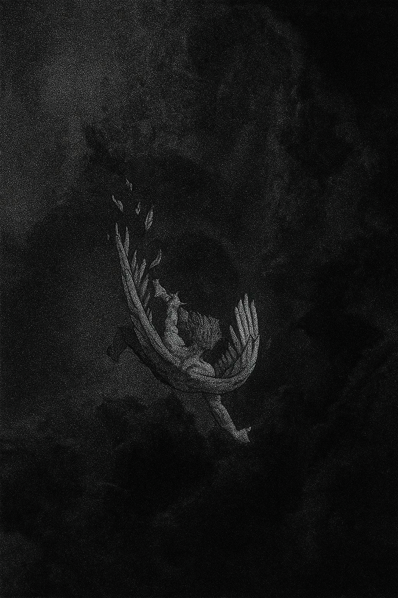

“Myths survive because truth hides within them.”
Greek myths explored ambition, pride, suffering, fate, and the fragile nature of human existence. They were not merely stories — they were reflections of humanity itself.

Icarus was the son of Daedalus, a brilliant inventor imprisoned within the Labyrinth of Crete. To escape, Daedalus crafted wings from feathers and wax.
Warned not to fly too close to the sun, Icarus ignored the warning, consumed by the thrill of flight. The heat melted the wax, and he fell into the sea below.
The myth became a symbol of ambition, pride, and the danger of excess.
Medusa was once described as a beautiful maiden devoted to Athena. After being transformed into a Gorgon, her gaze turned mortals to stone.
Feared and isolated, she became one of the most tragic figures in Greek mythology. Eventually, Perseus was sent to slay her using a mirrored shield.
Over time, Medusa came to symbolize fear, suffering, transformation, and power born from tragedy.